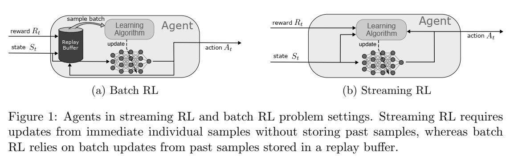

论文阅读四十五：流式深度强化学习
摘要
自然智能以连续流的方式处理经验，每时每刻都在实时感知、行动和学习。流式学习是Q-learning和TD等经典强化学习（RL）算法的工作方式，它通过使用最新样本而不存储来模仿自然学习。这种方法也非常适合资源受限、通信受限和隐私敏感的应用程序。然而，在深度 RL 中，学习者几乎总是使用批量更新和重放缓冲区，这使得它们的计算成本很高，而且与流式学习不兼容。虽然批量深度 RL 的盛行通常归因于其采样效率，但流式深度 RL 的缺失还有一个更关键的原因，那就是它经常出现不稳定性和学习失败，我们称之为流式障碍。本文介绍了stream-x 算法，它是第一类在预测和控制方面都克服了流障碍的深度 RL 算法，并且与批处理 RL 的样本效率相匹配。通过在 Mujoco Gym、DM Control Suite 和 AtariGames 中的实验，我们证明了现有算法中的流障碍，并利用我们的stream-x算法：流 Q、流 AC 和流 TD 成功实现了稳定学习，在 DM Control Dog 环境中取得了最佳无模型性能。一组通用技术是stream-x算法的基础，使它们能够在使用单组超参数时取得成功，并允许轻松扩展到其他算法，从而振兴了流式RL。 论文地址
引言
从连续的经验流中学习是一项至关重要的挑战，它反映了自然学习（Hayes 等人，2021），并且与许多涉及设备上学习的应用相关（Hayes & Kanan，2022、Neuman 等人，2022、Verma 等人，2023）。例如，与从可能过时的数据中学习相比，从近期经验中学习可以帮助系统快速适应变化（例如磨损）。在流式强化学习（例如 Q 学习或时间差 (TD) 学习）中，代理在每一步都会收到观察和奖励，采取行动并立即进行学习更新，而无需存储样本。这种场景很实用，因为由于计算资源有限（Hayes & Kanan 2022）、缺乏通信访问或对数据隐私的担忧（Van de Ven 等人 2020），保留原始样本通常是不可行的。
虽然经典的 RL 算法（如 Q-learning、SARSA、Actor-Critic 和 TD）最初是为流式学习而开发的（参见 Sutton & Barto 2018），但最近的进展已将重点主要转向批量学习。事实上，最近的深度 RL 的进步在很大程度上依赖于计算量大的批量学习，这在许多领域都有所体现，例如游戏（例如 Mnih 等人 2015 年、Silver 等人 2017 年）、模拟环境（例如 Haarnoja 等人 2018 年）和各种机器人任务（例如 Smith 等人 2023 年、Haarnoja 等人 2024 年）。批量 RL 算法将过去的样本存储在称为重放缓冲区的存储器中，并从中批量提取样本以进行更新。图 1 突出显示了流式 RL 和批量 RL 问题设置中的代理之间的差异。与批量 RL 不同，流式 RL 不允许使用重放缓冲区或批量更新。

正如Riedmiller（2005）、Mnih等人（20152016）和Lillicrap等人（2016）等所指出的那样，批处理强化学习的成功通常归因于其在数据和现代硬件方面的效率。对一批样本进行平均可以实现更可靠的更新，多次重用样本可能会从同一样本中提取更多信息。此外，批更新允许高效使用并行环境和GPU等现代硬件加速器。然而，批处理学习方法的计算要求过高，使其不适合在资源受限的系统中进行机载学习，如边缘设备或火星探测器（Wang等人，2023），或者在需要快速决策时（例如延迟套利）。例如，存储高维图像以供回放需要大量内存，批量更新会减缓实时预测和决策的速度（见袁和马哈茂德2022）。当计算受到限制或样本无法存储时，流式学习变得至关重要。然而，在深度强化学习中，流式学习在很大程度上仍未被采用，目前，在实践中明显缺乏流式强化学习应用程序，这使得在资源限制下无法实现深度强化学习。
深度流式强化学习被认为本质上是样本效率低下的，因为样本不能重复使用（参见 D’Oro 等人 2023 年、Schwarzer 等人 2023 年）。样本效率低下的另一个原因是，信用分配通常通过单步方法缓慢传播，而多步方法则使用来自多个步骤的奖励（Sutton & Barto 2018 年）。尽管使用多步回报的方法具有更好的信用分配，但它们无法在即时时间步骤或不存储的情况下进行更新（Mahmood 2017 年）。资格迹（Sutton 1988、van Hasselt 等人 2014、Mahmood & Sutton 2015、van Seijen 等人 2016、White & White 2016、Thodoroff 等人 2019、van Hasselt 等人 2021）试图平衡使用多步回报与每个时间步更新的好处。然而，它们在深度强化学习中很少使用。
尽管流式深度RL的缺失归因于其样本效率低下，但一个更关键的原因是，现有的深度学习方法在流式学习环境中会遇到学习不稳定甚至失败的情况（见Elfwin等人，2018），我们称之为流式障碍（stream barrier）（见图2）。深度强化学习方法在在线更新方面已经遇到了困难，面临着诸如可塑性丧失（Lyle 等人，2023 年，Dohare 等人，2024 年）、学习动态较差（Lyle 等人，2024 年）、无法实现进一步改进（例如，Lyle 等人，2023 年、2022 年）和性能逐渐下降（例如，Dohare 等人，2023 年，Abbas 等人，2023 年，Elsayed 和 Mahmood，2024 年）等问题。此外，流式深度RL带来了独特的挑战，因为用于更新的观察和奖励分布会随着时间的推移而迅速变化，加剧了这些问题。神经网络中资格迹的应用不足也可归因于不稳定问题（见Anand&Precup 2021，Harb&Precup 2017），这甚至可能导致分歧（Veeriah等人，2017）。因此，深度强化学习方法面临着流式障碍，且在很大程度上被忽视了。然而，一些研究（Elfwin等人，2018年；Young&Tian，2019年）表明，流式学习的表现刚刚起步，这表明该领域具有进一步探索和发展的潜力。
在本文中，我们通过引入流式深度RL方法——流TD（λ）、流Q（λ）和流AC（λ）——来解决流式障碍问题，这些方法统称为stream-x算法，并利用了资格追踪。我们的方法能够从最新的经验中学习，而无需使用重放缓冲区、批量更新或目标网络。与普遍看法相反，我们证明了流式深度RL可以像批处理RL一样稳定和高效。我们方法的有效性取决于所有stream-x算法共有的一组关键技术。它们包括一个新的优化器，用于调整步长以保持稳定性，适当的数据缩放，新的初始化方案，以及保持预激活的标准正态分布。我们的方法不需要超参数调整，并且使用同一组超参数实现了在电力消耗预测任务（Zhou等人，2021）、MuJoCo（Todorov等人，2012）、DM控制套件（Tunyasuvunakool等人，2020）、MinAtar（Young&Tian，2019）和Atari 2600（Bellemare等人，2013）环境中使用不同算法的结果。结果表明，我们的方法能够作为现成的解决方案，克服流障碍，提供流方法以前无法实现的结果，甚至超过批处理RL的性能，在一些复杂的环境中实现最佳的无模型性能。
背景